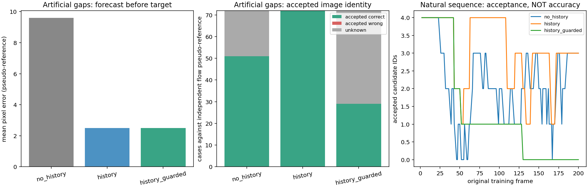
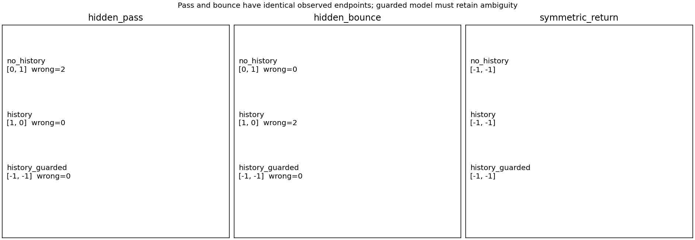
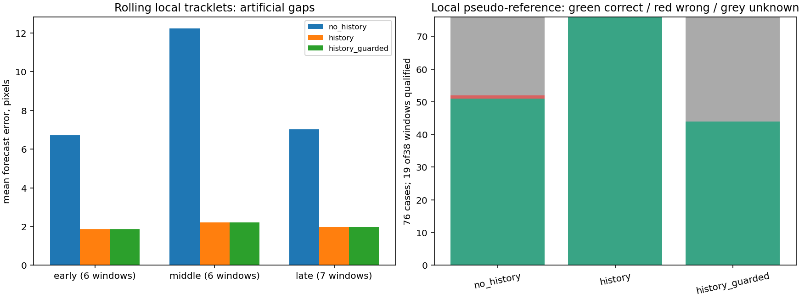
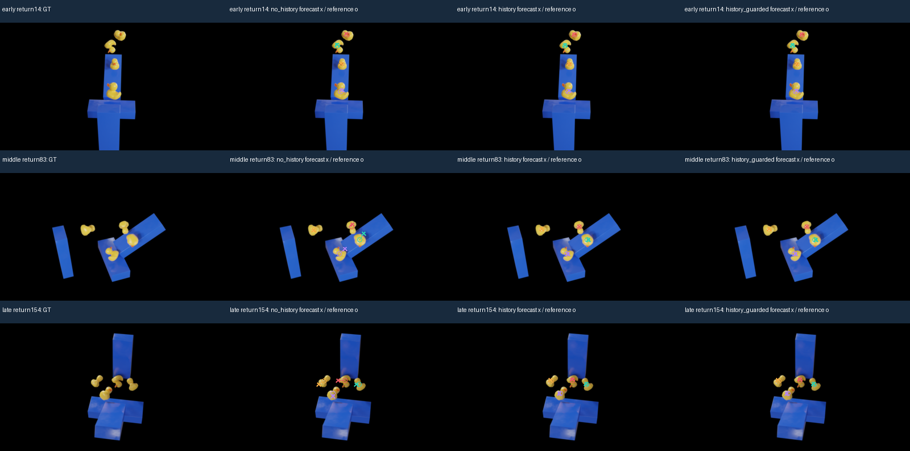

One bounded non-neural image-plane tracking prototype; ZERO Gaussian training. Candidate colors are image identities, not verified material IDs. Unknown stays grey. Score margins are not calibrated probabilities. Controlled masks use independent FB pseudo-reference; natural identity accuracy is unavailable.
Assessment | Controlled results | Independent verification

Rolling extension:38 predefined windows,19 qualified by local visible FB support. Local seeds restart per window; no global physical IDs.


Columns: GT | old visible FB evidence | CV candidate | guarded candidate | complete C1 early patch contribution | C1 centers. Full120 image-plane states and masks are in the JSON/NPZ receipts; compositor review uses11 fixed train frames.